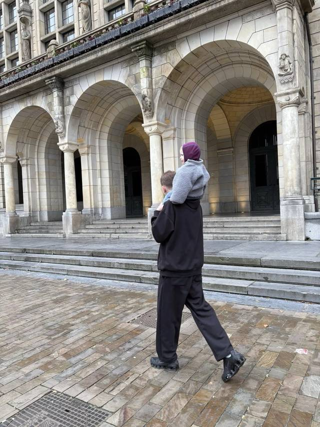

Gebouwde omgeving · Energietransitie
Over mij
Ik combineer ervaring in de directie met projectwerk dat ik zelf uitvoer, in de gebouwde omgeving en energietransitie.

Sinds 2015 werk ik in de gebouwde omgeving en energietransitie. Bij REL Groep zat ik in de directie, met personeel, juridische zaken, risico’s en de inrichting van de organisatie als portefeuille, naast strategische projecten.
Daarvoor zette ik bij REL het tenderteam op en droeg het over, en werkte ik aan programma’s met gemeenten en woningeigenaren, zoals de DoeTank Publieke Ontzorging.
Nu bouw ik mijn eigen praktijk op: projecten met kop en staart, maximaal twee of drie naast elkaar. Zo houd ik tijd voor de inhoud en om bij te leren.
Vanaf januari 2027 doe ik dit voltijds. In 2026 pak ik al opdrachten op die daarbij passen.
Waar ik in geloof
- Oprechtheid boven het wenselijke antwoord
- Vindingrijkheid boven het vertrouwde
- Energie boven uurtje factuurtje
- Snel leren boven stilstaan
Loopbaan
Tijdlijn
-
Vanaf september 2026
Zelfstandige
Eigen praktijk in tendermanagement, project- en programmamanagement en interim management, in de gebouwde omgeving en energietransitie. Vanaf januari 2027 voltijds.
-
2023 tot 2027
Directeur, REL
In de directie verantwoordelijk voor personeel, juridische zaken, risico’s en de inrichting van de organisatie, naast strategische projecten.
-
2020 tot 2023
Senior adviseur energietransitie, REL
Het tenderteam opgezet en getrokken tot 3 fte en 40 aanbiedingen per jaar, en daarna overgedragen.
-
2017 tot 2020
Programmamanager gebouwde omgeving, FME
Innovatietrajecten met technologieleveranciers en overheden, en belangenbehartiging voor lidbedrijven in de gebouwde omgeving.
-
2016 tot 2017
Projectmanager, FME
Projecten, standaardisering en belangenbehartiging voor de brancheverenigingen NVKL en Fedet.
-
2015 tot 2016
Projectmanagement, NAM
Opdrachtgevers en aannemers begeleid naar aardbevingsbestendige nieuwbouw in Groningen, volgens de richtlijn NPR 9998.
-
2008 tot 2015
Opleiding, Hanzehogeschool en Rijksuniversiteit Groningen
Afgestudeerd in Bouwkunde (BBE) aan de Hanzehogeschool Groningen, en in Sociale Planologie (MSc) en Culturele Geografie (MSc) aan de Rijksuniversiteit Groningen.
Liever even spreken?
Ik ben benieuwd wie je bent, wat je drijfveren zijn en wat je tegenhoudt om sneller te gaan.